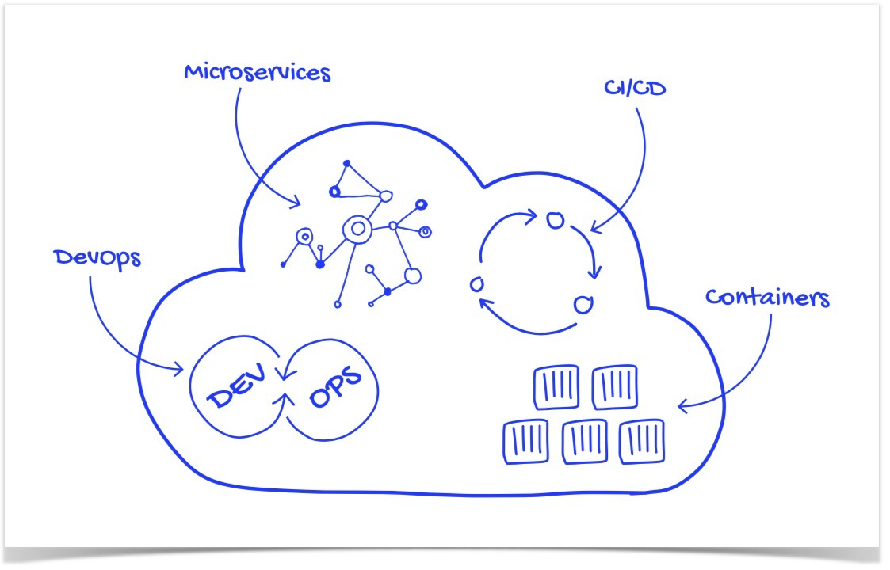

介绍
以Quarks作为开发框架，开发基于云原生的应用程序，包括MicroProfile规范API的使用和在Kubernetes云平台中部署Quarkus应用程序。
Cloud-Native
- 云原生是基于分布部署和统一运管的分布式云
- 以容器、微服务、DevOps等技术为基础建立的一套云技术产品体系。

技术基础
JDK
- 采用版本: 11/17，OpenJDK, Zuul JDK, Temurin JDK, Oracle JDK都可
- Native包构建应采用Graalvm，选择安装相应平台及版本
- SDKMAN: 管理多版本JDK
- 推荐书箱：Java8 in Action
Maven
- Java最流行的构建工具，相比Gradle更好用
- 了解依赖管理、常用插件、构建命令
- 推荐书箱：Mavan in Action，有中文翻译版
适用范围
- 有一定的Java基础开发者
- 编写过Spring应用的开发者
- 希望了解并增强云原生开发知识